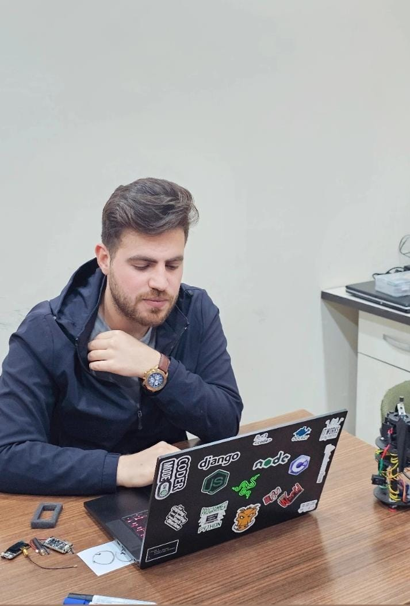
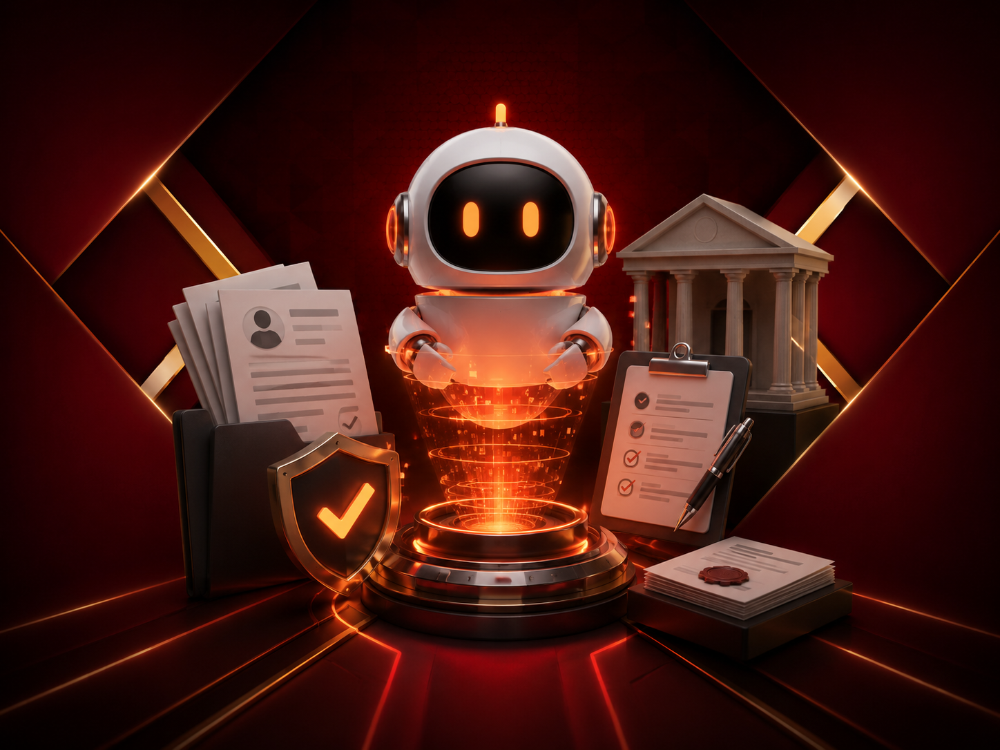
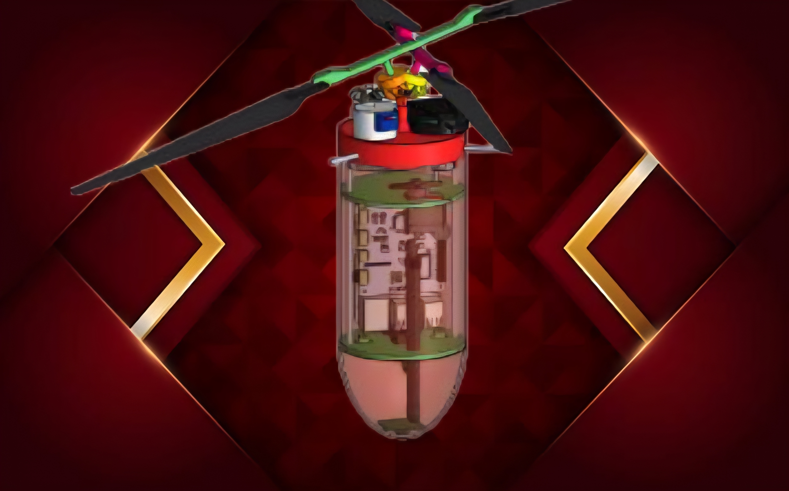
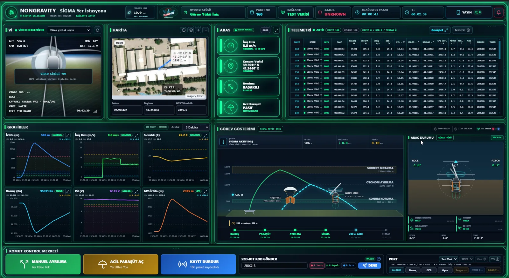
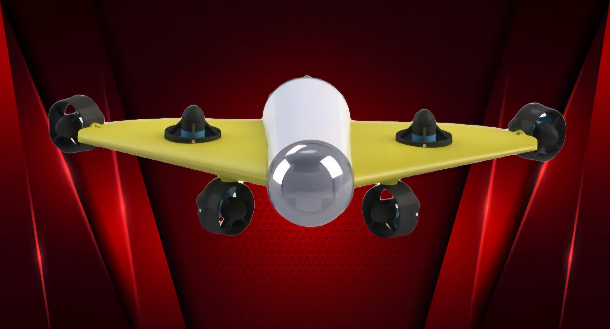
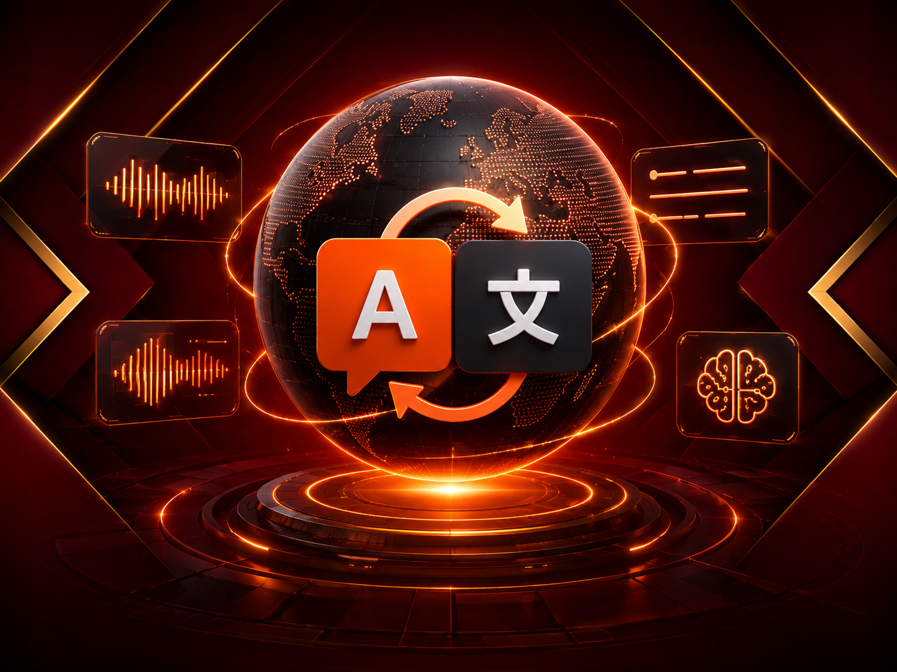

NS
0%
YÜKLENİYOR...
Atatürk Üniversitesi Yazılım Mühendisliği mezunuyum. İleri seviye RAG mimarileri, full-stack geliştirme ve gömülü sistemler alanlarında uygulamalı proje deneyimine sahibim. AB fonlu hackathonda birincilik ve TÜBİTAK 2209-A araştırma desteği ile akademik ve pratik üretkenliğimi kanıtladım.

Yazılım Mühendisi
Atatürk Üniversitesi Yazılım Mühendisliği programından 2026'da mezun olan bir yazılım mühendisiyim. Teknolojiye olan tutkum ve yüksek motivasyonum sayesinde, Unity, C#, C, C++ ve Python gibi dillerle projeler geliştirdim. Yeni teknolojilere hızla adapte olabiliyor, farklı projelerde aktif rol almaktan keyif alıyorum.
Atatürk Üniversitesi Atugem Teknoloji Kulübünde Model Uydu ve Otonom Sualtı Aracı takımlarının ARGE birimlerinde aktif olarak görev aldım.
TEKNOFEST 2025 kapsamında Aerodinamik ve Güç Verimliliği ile Akıllı Mini Uydu projesi ve Otonom Sualtı Araçlarının Konfigürasyonuna yönelik geliştirdiğimiz proje, Atatürk Üniversitesi Bilimsel Araştırma Projeleri (BAP) desteği almaya hak kazandı.
Staj sürecinde Atatürk Üniversitesi için KVKK uyumlu, self-hosted bir kurumsal yapay zeka destek platformunu (AsistTR) sıfırdan tasarlayıp production ortamına aldım. İleri seviye RAG mimarileri (RAPTOR, HippoRAG2, Agentic RAG), full-stack ve gömülü sistemler (NVIDIA Jetson, Pixhawk PX4) alanlarında deneyim kazandım. AB fonlu hackathonda birincilik ve TÜBİTAK 2209-A & LKAB-B araştırma desteği ile projelerimi tamamladım.
Uzmanlık Alanlarım
Python, Node.js, React, Flutter ve C# ile full-stack uygulama geliştirme; production ortamına alma ve sistem mimarisi konusunda deneyim.
React 18 (Vite), Node.js/Express.js, PostgreSQL, Socket.IO ve Docker ile uçtan uca web uygulamaları geliştirme ve DevOps süreçleri.
Çeşitli bilgisayar sistemlerine Hackintosh kurulumu ve optimizasyonu konusunda kapsamlı deneyim.
Farklı ihtiyaçlara yönelik özel masaüstü bilgisayar sistemleri toplama ve optimizasyon konusunda deneyim.
NVIDIA Jetson, Pixhawk PX4, Raspberry Pi ve Arduino üzerinde gerçek zamanlı sistemler, sensör füzyonu ve otonom kontrol mimarileri.
PostgreSQL, Redis, Docker ve Nginx ile ölçeklenebilir altyapı; BullMQ iş kuyrukları ve WebSocket mimarileri.
Unity ile oyun geliştirme, sanal gerçeklik (VR) ve artırılmış gerçeklik (AR) uygulamaları geliştirme.
Contextual Retrieval, RAPTOR, HippoRAG2 ve Agentic RAG gibi ileri seviye RAG mimarileri ile kurumsal yapay zeka platformları ve akıllı chatbot sistemleri geliştirme.
Projelerim

Vatandaşların kamu başvurularında doğru kuruma, belgeye ve dilekçeye ulaşmasını kolaylaştıran RAG destekli akıllı kamu asistanı. Flutter mobil uygulama, Node.js/Express backend, React yönetim paneli ve PostgreSQL + pgvector hibrit retrieval.
1.lik Ödülü — AB Fonlu Hackathon (Bilim Erzurum & UNDP, TBB)

TÜRKSAT Model Uydu Yarışması 2025 için yazılım lideri olarak geliştirdiğim uçtan uca model uydu yazılım sistemi. Sıfırdan tasarlanmış, tam otomatik telemetri (1 Hz), gerçek zamanlı video akışı (240x180@2fps), SD karta yüksek kaliteli video kaydı (640x480@15fps), IoT S2S bonus görevi ve SAHA protokolü ile taşıyıcı-görev yükü haberleşmesi içerir.
Ana Teknolojiler: Raspberry Pi Zero 2W, Arduino Nano/Mega, Python 3.11, C# (.NET), C++, XBee 3 Pro (API Mode), BMP280, 10-DOF IMU, GPS, ADS1115, Picamera2, H.264/MJPEG, SAHA Protokolü, ARAS Alarm Sistemi.
TÜBİTAK 2209-A programında tam onay!

TÜRKSAT 2026 Model Uydu Yarışması SİGMA görevi için geliştirdiğim uçtan uca model uydu yazılımı. Raspberry Pi 5 uçuş kontrolü; çift motorlu aktif iniş ve konum koruma; şifreli XBee telemetri, Walksnail Avatar video hattı, APAM, ARAS ve Electron yer istasyonunu tek mimaride birleştiriyor.
Ana Teknolojiler: Raspberry Pi 5, Python 3.11, React 19, TypeScript, Electron 43, XBee 3, Arduino C++, Walksnail Avatar, H.264/MJPEG ve WebSocket.
Aktif geliştirme · 169/169 uçuş ve güvenlik + 3/3 motor testi başarılı

Teknofest kapsamında yazılım lideri olarak yürüttüğüm otonom sualtı yarışması. TEKNOFEST 2025 İnsansız Su Altı Sistemleri Yarışması için geliştirilen AXOLOTL, otonom görevler gerçekleştirebilen bir sualtı aracıdır.
TÜBİTAK 2209-A programında tam onay!

SMT, NMT ve LLM çeviri mimarilerini karşılaştıran interaktif eğitim platformu. Tokenization → embedding → attention süreçlerini adım adım görselleştiren simülasyon motoru. Gemini API ile atasözü ve deyimlerin kültürel karşılıklarını bulma stratejileri.
İş Deneyimim
ATABAUM — Atatürk Üniversitesi Bilgisayar Bilimleri Araştırma ve Uygulama Merkezi
AsistTR — Kurumsal Yapay Zeka Destekli Canlı Destek & Helpdesk Platformu
Akademik Geçmişim
Lisans Derecesi · Yazılım Mühendisliği
2023 – 2026 · Mezun
Lisans Derecesi · Bilgisayar Mühendisliği
2022 - 2023
Lisans Derecesi · Bilgisayar Teknolojileri ve Bilişim Sistemleri
2021 - 2022
Lisans Derecesi · Bilgisayar Mühendisliği
2019 - 2020